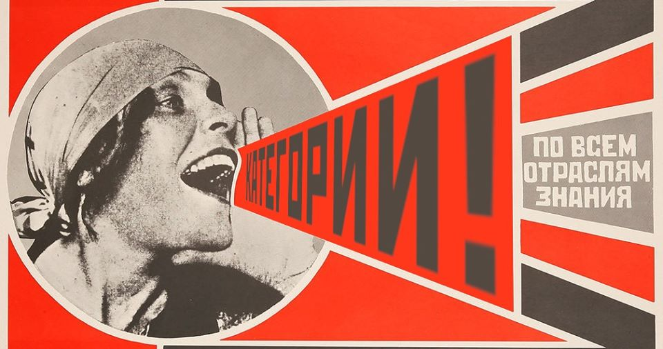

Kатегории: по всем отраслям знаний!
What is ItaCa?
During the last Category Theory in Edinburgh, Scotland, it became apparent how Italians are many in the category theory community: some of us proposed to join them all in a semi-official network. This is ItaCa: a group of (not necessarily) young mathematicians scattered all around the world. Our name stands for Italian Category theorists, but it also reminds the isle where Odysseus strived so hard to come back.
The community we would like to create is as open and inclusive as possible, without distinction of gender, ethnicity, language, or mathematical opinion. The isle of ItaCa is open to all kinds of mathematicians, no matter their nationality and background. It is, however, made by Italians, and more generally by category theorists in Italy, and has (will always have?) a core of Italians among the organizers and promoters. This is to say: despite its apparent absence from the scenes, Italian category theory exists, and strives to come home.
Our inaugural Christmas workshop will hopefully bring together most of us, get us to know each other, and allow us to discuss our research in a friendly environment. Our hope is that there will be other such modest but sincere events meant to connect and unify the community we form.
See you in ItaCa.